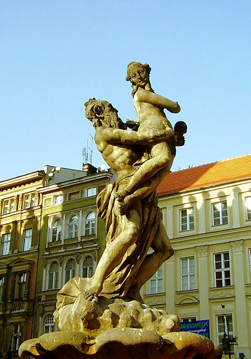
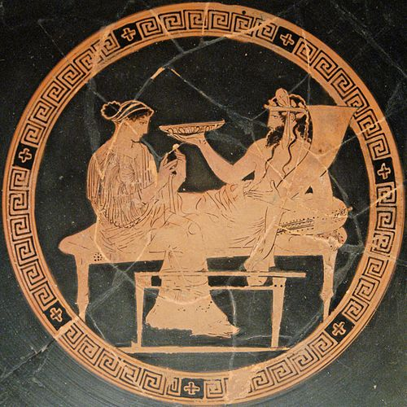

Аи́д (др.-греч. Ἀΐδης (Aides) или ᾍδης, или Гаде́с; у римлян — Плуто́н, др.-греч. Πλούτων (Ploúton), лат. Pluto «богатый»; также Дит лат. Dis или Орк лат. Orcus) в древнегреческой мифологии — верховный бог смерти и подземного царства мёртвых. Старший сын Кроноса и Реи и старейший из Олимпийских богов; брат Зевса, Посейдона, Геры, Деметры и Гестии. Супруг Персефоны, вместе с ним почитаемой и призываемой. Происхождение имени бога точно не выяснено; во всяком случае, оно ассоциировалось с др.-греч. ἀϊδής «невидимый», ἀΐδιος «вечный», ἀϊδνός «мрачный», αἰδοῖος «почтенный, сострадательный»; αἰδώς, «благоговейный страх, почтение», но и «милосердие»; ἀΐδηλος «делающий невидимым», то есть «губительный», или же «невидимый, неведомый, таинственный, мрачный».

Аид похищает Персефону, фонтан в Познани
Согласно Гесиоду, когда Аид родился, отец проглотил его, как и всех своих детей (по версии Гигина, он был сброшен отцом в Тартар). После раздела мира между тремя братьями (Зевс, Посейдон и Аид), после одержанной победы над титанами Аиду досталось в удел подземное царство и власть над тенями умерших. Аид считался божеством подземных богатств и плодородия, дарующих урожай из недр земли. Согласно Гомеру, Аид сам стережёт своё царство. Гомер называет Аида «щедрым» и «гостеприимным», так как смертная участь не минует ни одного человека. В олимпийской мифологии Аид является одним из двенадцати олимпийцев, а также входит в число трёх основных богов, поделивших между собой мир после войны с титанами.Гомер, называющий его также Зевсом Подземным, описывает Аида исключительно в качестве бога смерти и представляет его лично стерегущим врата своего царства (πυλάρτης (pylártis)).Будучи богом смерти, Аид вызывал страх: само имя его греки и римляне табуировали, так как боялись произносить, заменяя его различными эвфемистическими эпитетами, среди прочих, и обозначением Плутон, вошедшим в употребление ещё в V веке до н. э. и окончательно вытеснившим первоначальное имя Аид, употреблявшееся как единственное Гомером. Таким образом, фигура Аида «вобрала» в себя образ бога Плутоса, первоначально самостоятельного божества богатства и плодородия. В связи с этой интеграцией и вместе с переменой имени произошла и перемена самого представления об Аиде, значительно смягчившая его безотрадное и неумолимое существо. Вероятно, под влиянием элевсинских мистерий ему стали приписываться качества бога богатства (хранителя подземных сокровищ) и плодородия в связи с мистико-аллегорическим сравнением судьбы хлебного зерна (как бы погребаемого в момент посева, чтобы воскреснуть для новой жизни в колосе) с загробною судьбою человека. Супруга Аида, Персефона, также считалась покровительницей плодородия и богиней царства мёртвых. В различных сказаниях упоминается волшебная шапка (шлем) Аида (Ἄϊδος κυνέην (Aidos kunéin) — собств. род башлыка из шкуры животного), имевшая свойство делать надевшего её невидимым (аналогично «шапке-невидимке» из русских и немецких сказок). Она была подарена Аиду циклопами за то, что он (по приказу Зевса) освободил их. Этой шапкой пользовались также Зевс — во время битвы с титанами; Персей, убивая Медузу Горгону; Афина, помогая Диомеду против Арея, чтобы не быть узнанною последним; в гигантомахии эта шапка покрывает голову Гермеса. Скипетр Плутона изображает трёх псов. У Гераклита Аид отождествлялся с Дионисом.

Аид и Персефона. Краснофигурная вазопись. Британский музей.